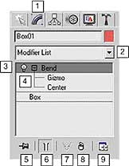
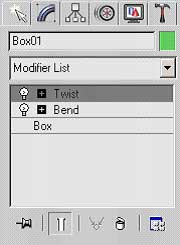
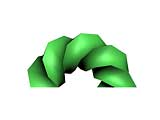
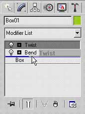
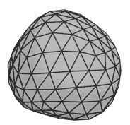
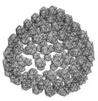
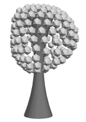
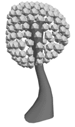
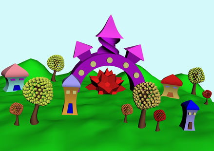

Модификатором называется специальная операция 3ds max, которую можно применить к объекту. Каждый модификатор имеет определённое название и наделяет объект дополнительными свойствами. Удобство работы с модификаторами состоит в том, что к одному объекту можно применить несколько модификаторов, менять последовательность их воздействия на объект, а также перенастраивать и удалять модификаторы.
Для работы с модификаторами существует стек модификаторов, который находится на вкладке Modify командной панели.
Элементы стека модификаторов:К одному объекту можно применить несколько модификаторов. Напомню, что читается стек снизу вверх.
Причем конечная форма объекта зависит от последовательности применения модификаторов. Сравните: на первом скриншоте изображена фигура, к которой сначала применили модификатор Bend (Сгиб), а потом Twist (Скручивание). А на следующем скриншоте изображена фигура, которую сначала скрутили, а потом согнули. Разница очевидна.
Чтобы поменять местами модификаторы, в стеке необходимо выделить один из модификаторов и, удерживая нажатой левую кнопку мыши, перетащить его. Легче всего перетаскивать верхний под нижний, причем появляющаяся синяя полоса будет указывать, куда переместится модификатор, когда вы отпустите кнопку мыши.
Чтобы отключить воздействие модификатора на объект, нужно сделать один щелчок по лампочке, которая располагается слева от названия модификатора, и она станет серого цвета. Тогда модификатор останется в стеке, и все его настройки сохранятся, но модифицировать объект он не будет. Чтобы включить модификатор, сделайте еще один щелчок по лампочке, и она опять станет белой.
Чтобы удалить модификатор из стека, нужно его выделить и щелкнуть по кнопке с изображением корзины
1. На виде Тор создайте GeoSphere c радиусом 75. Примените к ней модификатор Noise (Шум) и установите параметры зашумления Strength X=Y=Z=50. Меняя число Seed, подберите подходящую форму.
2. Примените к этому объекту модификатор Lattice (Решетка). В свитке Parameters установите переключатель в позицию Joints Only from Vertices (Только узлы на вертексах). В разделе Joints выберите форму узлов Icosa cо значением Radius=10. Получилась крона дерева.
3. На виде Тор создайте Cylinder с параметрами (R=35, H=120, HS=10). Это будет ствол дерева. Расположите его по центру кроны. Примените к цилиндру модификатор Stretch (Растягивание) с настройками Stretch=1,0 и Amplify=1,0.
4. Если вы хотите сделать ствол неравномерно изогнутым, то можно применить к нему модификатор Noise.
Дерево готово. Сгруппируйте его через команду главного меню Group - Group.
5. Попробуйте создать целый сказочный городок, используя примитивы и параметрические модификаторы. Помните, что нужно добавлять сегментов таким примитивам, как Box, Pyramid или Plane, иначе они не будут изменятся из-за нехватки опорных точек.Когда вы будете клонировать и расставлять по сказочному городу деревья, то меняйте у модификатора Noise число Seed, тогда деревья будут разными. Клоны должны быть независимыми.
